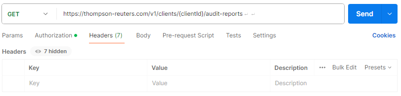

Streamline Audit Readiness with Automation
For a tax manager, staying audit-ready while juggling multiple deadlines, manual tasks, and interdepartmental coordination is a constant challenge. Delays in gathering documentation, inconsistent data across systems, and difficulty collaborating with finance or compliance teams can lead to costly setbacks. The SureAudit API helps address these issues by automating key parts of the audit workflow and ensuring reliable access to updated data.
Use Cases
You can see the different use cases below that address a tax manager’s pain points:
Retrieve all clients and audit reports in a central database
One of the main use cases of the SureAudit API is retrieving all clients and their associated audit reports in one place. Instead of relying on scattered spreadsheets or multiple software tools, you can automatically pull all relevant reports. This ensures your team always has access to the most current information without chasing down emails or files.
Automatically collect detailed report information for audit preparation
Using the SureAudit APIs, you can retrieve detailed information about each report, including timestamps, document types, and verification details. This ensures that you access accurate data from the source in real time, speeding up the compilation of audit packages and responses to regulator inquiries while reducing the risk of errors or outdated information.
Enable cross-department collaboration with shared, live data
By integrating the SureAudit APIs with your internal platforms, you enable tax, finance, and compliance teams to work from the same data set. Everyone can access the same up-to-date reports without needing to coordinate manually. This eliminates repetitive requests between departments, reduces confusion, and speeds up decision making. Your team can shift from reactive work to strategic tasks with confidence that the data they are using is complete and accurate.
Standardize and scale your audit process across teams
The SureAudit APIs also helps standardize and scale your audit process. Whether you are onboarding new clients, preparing for quarterly reviews, or responding to tax authorities, the process becomes streamlined. This lowers the burden on individual team members and supports long-term consistency.
Developer Guide: Retrieve Detailed Audit Report Information
This guide walks you through accessing detailed audit report information using the SureAudit API. You'll learn how to authenticate, retrieve clients and audit reports, and view a specific report's details. The SureAudit API allows secure access to a client audit data. To retrieve a specific audit report, you'll need to authenticate, list available clients, select a client, get their audit reports, and then query a specific report using its ID.
Prerequisites
- API Key: Your SureAudit
client_credentials. - Bearer Token: Needed for authenticated requests.
- API Tool: You can use Postman or any tool that can send HTTP requests.
Step 1: Authenticate and get a bearer token
Make a POST request to the authentication endpoint using your client_credentials to get a bearer token. Include this token in the Authorization header of all subsequent requests.
Step 2: List clients
Make a GET request to the list clients endpoint to get a list of clients associated with your credentials. The response includes details for each authorized client, including a clientId you'll need in the next step.
Step 3: List audit reports for a client
Use a clientId to make a GET request to the retrieve audit reports endpoint to list the corresponding client’s audit reports. A successful response returns array containing all the audit reports, each with a unique reportId.
Step 4: Retrieve detailed audit report
Make a GET request to the retrieve detailed audit reports endpoint to get detailed information about a specific report. The reportId identifies the audit report you want to retrieve in detail. The response is an object that contains the following information:
Response Fields
reportId: Unique identifier for the reportclientId: Client associated with the reportcreatedDate: When the report was createdstatus: The report's completion statusauditor: Name of the auditor who completed the reportsummary: Description of the reportattachments: Related files and download links
Troubleshooting
- Ensure your bearer token is current and passed in the Authorization header
- Double-check that your
clientIdandreportIdvalues are correct - Confirm your network and endpoint URLs are correct
Obtain a bearer token
Use your client credentials to request a bearer token. You’ll use this token to authenticate subsequent API requests.
Prerequisites
- Your SureAudit API key, also known as
client_credentials. - A tool such as
curl, Postman, or any HTTP client to send HTTP requests.
POST /v1/auth/tokenRequest parameter
-
client_credentialstype: stringrequiredThe API key that authenticates the user to obtain
bearer_token.
curl -X POST https://thompson-reuters.com/v1/auth/token \
-H "Content-Type: application/json" \
-d '{"client_credentials": "<client_credentials>"}'Authorization
Headers
Request Body
fetch('https://thompson-reuters.com/v1/auth/token', {
method: 'POST',
headers: {
'Content-Type': 'application/json',
},
body: JSON.stringify({
client_credentials: '<client_credentials>',
}),
})
.then(response => response.json())
.then(data => {
console.log('Response:', data);
})
.catch(error => {
console.error('Error:', error);
});Response
{
"access_token": "your-access-token",
"token_type": "Bearer"
}"Error has occurred."Get all audit reports for a given client
Use the clientId to retrieve audit reports you have access to for that client.
Prerequisites
- The
clientIdyou obtained from List Clients endpoint specifies the client whose audit reports you want to retrieve. - A tool such as
curl, Postman, or any HTTP client to send HTTP requests.
GET /v1/clients/{clientId}/audit-reports?fromDate={fromDate}&toDate={toDate}Path parameter
-
clientIdtype: stringrequiredThe
clientIdidentifies the client whose audit reports you want to retrieve.
Query parameters
-
fromDatetype: stringoptionalThe optional parameter
fromDatespecifies the start date from which reports are retrieved. -
toDatetype: stringoptionalThe optional parameter
toDatespecifies the end date up to which reports are retrieved.
curl -X GET "https://thompson-reuters.com/v1/clients/{clientId}/audit-reports" \
-H "Authorization: Bearer <your_access_token>Authorization
Headers
You don’t need to set any headers manually. Postman adds them for you.
Request Body
Leave the body empty.
Params
These are optional fields, you don't have to include these to get a successful response.
fetch('https://thompson-reuters.com/v1/clients/<clientId>/audit-reports?fromDate=2024-01-01&toDate=2024-12-31', {
method: 'GET',
headers: {
'Authorization': 'Bearer <access_token>',
},
})
.then(response => response.json())
.then(data => {
console.log('Response:', data);
})
.catch(error => {
console.error('Error:', error);
});Response
-
auditReports type: Object[]
An array containing all audit reports for a client. Each object includes details such as
reportId,clientId, andcreatedDate.
{
"auditReports": [
{
"reportId": "12345",
"clientId": "67890",
"createdDate": "2024-01-15T10:30:00Z"
},
{
"reportId": "12346",
"clientId": "67890",
"createdDate": "2024-04-01T08:00:00Z"
}
]
}"Error has occurred."Get audit report details
Use the reportId to retrieve detailed information about a specific audit report.
Prerequisites
- The
reportIdyou obtained from Audit endpoint specifies the client whose audit reports you want to retrieve. - A tool such as
curl, Postman, or any HTTP client to send HTTP requests.
GET /v1/clients/{clientId}/audit-reports?fromDate={fromDate}&toDate={toDate}Path parameter
-
reportIdtype: stringrequiredThe
reportIdidentifies the audit report for which you want to retrieve detailed information.
curl -X GET "https://thompson-reuters.com/v1/reports/{reportId}" \
-H "Authorization: Bearer <your_access_token>"Authorization
Headers
You don’t need to set any headers manually. Postman adds them for you.
Request Body
Leave the body empty.
fetch('https://thompson-reuters.com/v1/reports/{reportId}', {
method: 'GET',
headers: {
'Authorization': 'Bearer <your_access_token>',
},
})
.then(response => response.json())
.then(data => {
console.log('Response:', data);
})
.catch(error => {
console.error('Error:', error);
});Response
-
reportDetails type: Object[]
An array containing detailed information of an audit reports for a client. The object includes all the essential information of the report and a downloadable link for the file.
{
"reportId": "12345",
"clientId": "67890",
"createdDate": "2024-01-15T10:30:00Z",
"status": "Completed",
"auditor": "John Doe",
"summary": "This audit report covers the financial year 2023.",
"attachments": [
{
"fileName": "audit-summary.pdf",
"url": "https://thompson-reuters.com/reports/12345/audit-summary.pdf"
}
]
}
"Error has occurred."